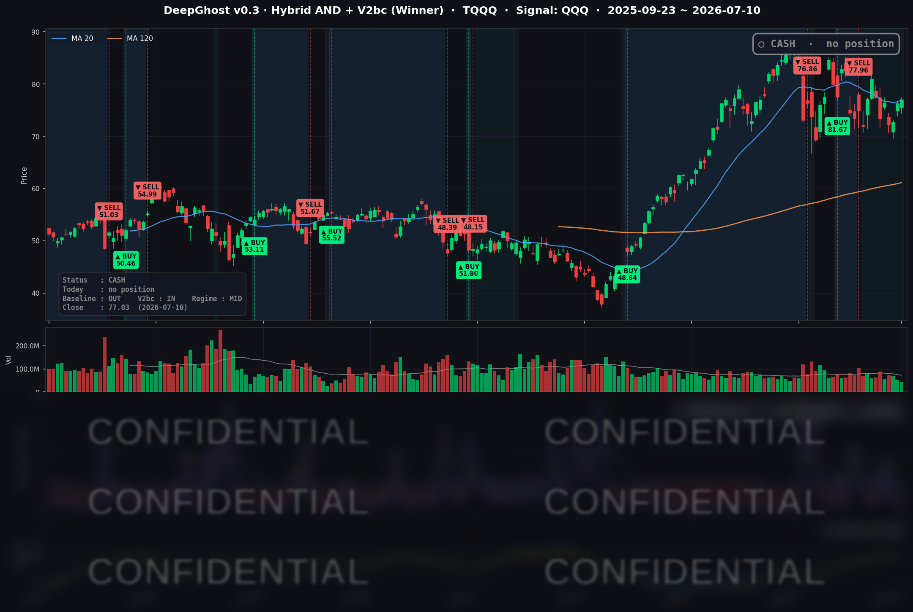

👻 매일 시그널과 히스토리를 홈페이지에서 한눈에 → www.ghostai.co.kr
하이닉스가 상장하고 지수는 강보합으로 마감했습미다. 하지만 사실상 META와 NVDA 두 종목이 끌어올린 좁은 폭 상승장이었습니다. 다음 주 CPI발표를 앞두고 무리하지 않고 현금 상태를 이어갑니다.
📊 오늘의 매매 신호
| 항목 | 내용 |
|---|---|
| 오늘 할 일 | ✅ 아무것도 안 해도 됩니다 |
| 포지션 상태 | 💵 현금 보유 중 (OUT OF POSITION) |
| 현금 보유 기간 | 2026-06-25 ~ 2026-07-10 (15일) |
| TQQQ 종가 | $77.03 (+0.90%) |
지난 6/25 매도 이후 전략은 계속 현금 상태로 관망 중입니다.
TQQQ 시그널 — OUT OF POSITION
현재 상태: 현금 보유 중 | 6/25 매도 이후 관망 지속

오늘 나스닥이 소폭 더 오르면서(QQQ +0.31%, TQQQ +0.90%) 전날에 이어 강보합 흐름이 이어졌습니다. 그럼에도 모델의 레버리지 나스닥(TQQQ) 트랙은 여전히 현금 상태를 유지했습니다.
다만 어제와 달라진 점이 하나 있습니다. 그동안 진입을 가로막던 횡보 필터가 경계 구간(HIGH)에서 한 단계 완화되어 정상 구간으로 돌아왔습니다.
여기에 다음 주 CPI(7/14)라는 대형 이벤트가 대기하고 있습니다. 상승의 폭이 두 종목에 갇혀 있는 좁은 시장에서 굳이 무리하게 올라타지 않고, 큰 지표 이벤트를 관망하는 것이 이 전략이 의도하는 절제된 방어입니다.
오늘 미국 시장 — 시황 요약
지수 마감
| 지수 | 종가 | 등락률 |
|---|---|---|
| S&P 500 | 7,575.39 | +0.42% |
| Nasdaq Composite | 26,281.61 | +0.29% |
| Dow Jones | 52,637.01 | +0.29% |
| Russell 2000 | 2,977.81 | -0.49% |
대형주 지수는 모두 +0.3~0.4%의 강보합으로 마감했습니다. 하지만 이 상승은 폭이 넓은 건강한 상승이 아니었습니다. 소형주를 대표하는 러셀 2000은 홀로 -0.49% 하락하며 대형주와 뚜렷하게 갈라졌습니다. 지수를 밀어올린 것은 META와 NVDA 두 종목의 집중 상승이었고, 실제로 커버리지 종목 중 9개가 하락한 혼조장이었습니다. 숫자는 초록불이지만 상승의 체력은 약했던 하루입니다.
국채 금리 동향
| 만기 | 수익률 | 전일 대비 |
|---|---|---|
| 3개월 | 3.695% | +1.3bp |
| 5년 | 4.308% | +3.9bp |
| 10년 | 4.569% | +3.0bp |
| 30년 | 5.071% | +1.8bp |
금리는 만기 전 구간에서 소폭 올랐고, 단기물(3개월 +1.3bp)보다 5년·10년물이 더 크게 오르는 완만한 베어 스티프닝이 나타났습니다. 상승폭이 3-4bp 수준으로 제한적이어서 위험자산에 뚜렷한 부담은 아니었지만, 금리에 민감한 소형주에는 소폭 역풍으로 작용했습니다. 장단기 금리는 정상 우상향(10년-3개월 +87.4bp)을 유지해 침체를 알리는 역전 신호는 없습니다. 단기물이 상대적으로 안정된 것은 연준의 즉각적 추가 긴축 우려가 크지 않다는 뜻이지만, 30년물 5.07%는 장기 재정 부담이 여전함을 보여줍니다.
연준 발언 & 금리 패스
이날 새로운 주요 발언은 없었고, Warsh 의장의 직전 발언(7/8 유럽 중앙은행 포럼)이 시장 톤을 지배했습니다. 그는 최근 인플레이션 리스크가 다소 완화됐다고 인정하면서도(비둘기적), 2% 목표 복귀 의지를 재확인하고 사전 가이던스를 제공하지 않겠다며 "결정은 데이터에 근거하겠다"고 강조했습니다(매파적). 6월 FOMC는 기준금리 3.50~3.75% 동결을 유지했지만 점도표상 연내 최소 1회 인상을 예상하는 위원이 다수였습니다. 요약하면 중립~약매파적 톤으로, 연준이 데이터 의존 스탠스를 강화하면서 다음 주 CPI·PPI 결과에 시장 민감도가 한층 커진 국면입니다.
오늘의 핵심 이슈
- META +5.97% 급등 — AI 인프라가 '비용'에서 '매출'로: Meta가 자사 AI 컴퓨팅을 판매하는 클라우드 사업('Meta Compute')과 자체 AI 칩(코드명 Iris, 9월 생산 시작) 계획을 부각하면서, 그동안 부담으로 여겨지던 막대한 AI 투자가 신규 매출 기회로 재평가됐습니다. 커버리지 내 당일 최대 상승주였습니다.
- NVDA +4.03% — Blackwell 수요 지속: 차세대 AI 하드웨어 낙관론과 함께 모건스탠리가 비중확대·목표가 $288을 재확인했습니다. Meta의 자체칩 뉴스에도 GPU를 대체가 아닌 보완재로 보는 시각이 우세해 오히려 상승했습니다.
- 반도체·소프트 성장주 순환 조정: 지수는 빅테크 두 종목이 견인했지만, 인텔(-2.40%)·넷플릭스(-2.78%)·마이크론(-1.24%)·퀄컴(-1.02%) 등 개별 약세가 혼재했습니다. 인텔은 18A 파운드리 수율·양산 일정 우려, 넷플릭스는 구독자 성장 둔화 우려가 부각됐습니다.
변동성 & 투자심리
VIX는 15.03으로 전일(15.84) 대비 -5.11% 하락하며 15 부근의 저변동성 국면으로 다시 내려왔습니다. 지수 강보합과 정합하는 위험선호 신호입니다. 공포탐욕지수는 이날 정확한 수치가 교차검증되지 않아 단정하지 않지만, VIX 하락과 AI 대형주 강세를 종합하면 탐욕 쪽에 가까운 심리로 해석됩니다. 다만 소형주 디커플링과 반도체 일부의 순환 조정이 공존해, 낙관은 하되 그 폭이 좁은 조심스러운 낙관으로 요약됩니다.
매크로 & 원자재
WTI는 $71.51(-0.79%), Brent는 $76.00(-0.39%)로 나란히 소폭 하락했습니다. 공급 우려가 완화된 결과입니다. 금은 $4,128.90(-0.04%)로 사실상 보합에 머물렀는데, 위험선호 국면에서 안전자산 수요가 정체된 흐름입니다. 다음 대형 이벤트는 7/14 6월 CPI와 7/15 PPI로, 각각 인플레이션 경로와 연준 톤을 재설정할 분기점입니다.
주요 종목 동향
| 종목 | 전일 종가 | 당일 종가 | 등락률 | 비고 |
|---|---|---|---|---|
| AAPL | 316.22 | 315.32 | -0.28% | 본전 부근 회귀 |
| NVDA | 202.78 | 210.96 | +4.03% | Blackwell 수요·MS 목표가 $288 재확인, 시총 회복 |
| MSFT | 384.36 | 385.10 | +0.19% | 소폭 강세 |
| GOOGL | 358.89 | 357.18 | -0.48% | 나 홀로 약세 지속 |
| META | 631.48 | 669.21 | +5.97% | 당일 최대 상승 — Meta Compute 클라우드·Iris 칩 모멘텀 |
| AMZN | 247.04 | 245.34 | -0.69% | 전일 상승분 되돌림 |
| TSLA | 406.55 | 407.76 | +0.30% | 소폭 강세 |
| NFLX | 75.47 | 73.37 | -2.78% | 당일 최대 낙폭 — 구독자 성장 둔화·경쟁 심화 우려 |
| AVGO | 401.11 | 399.97 | -0.28% | 소폭 약세 |
| QCOM | 191.11 | 189.16 | -1.02% | 반도체 되돌림 |
| INTC | 112.54 | 109.84 | -2.40% | 18A 파운드리 수율·양산 우려, AMD 데이터센터 추월 이슈 |
| MU | 991.64 | 979.30 | -1.24% | 메모리 순환 조정 |
Ghost.AI — Quantitative AI Investment
Model: DeepGhost v0.3 | Transformer-Based Deep Learning
Coverage: 13 tickers | Updated every trading day after US market close
⚠️ 본 자료는 정보 제공 목적으로만 작성되었으며 투자 권유가 아닙니다. 모든 투자의 책임은 투자자 본인에게 있습니다. 과거 성과가 미래 수익을 보장하지 않습니다.
[유의사항]
- 본 서비스는 불특정 다수를 대상으로 발행되는 단방향 정보 제공 서비스이며, 투자자 개인의 재산 상황·투자 목적·위험 선호도를 반영한 개별 투자 조언이 아닙니다.
- 고스트에이아이 주식회사는 고객과 쌍방향 의사소통(개별 상담, 맞춤형 자문 등)을 제공하지 않습니다.
- 본 콘텐츠는 투자 권유 또는 매매 주문의 청약·청약의 권유에 해당하지 않으며, 최종 투자 판단 및 그에 따른 손익의 책임은 전적으로 투자자 본인에게 있습니다.
고스트에이아이 주식회사